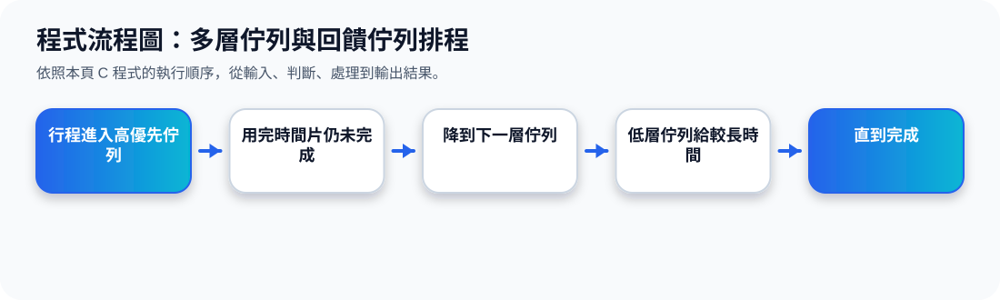

二、Multilevel Queue：多層佇列
核心觀念 Multilevel Queue 會把 ready queue 分成多個獨立佇列。不同類型的 process 進入不同佇列，例如 foreground、background、system、interactive、batch。
Ready Queue 分層概念圖
Multilevel Queue 動畫
三、佇列內與佇列間的排程
Multilevel Queue 有兩個層次的排程問題：第一是每個 queue 內部怎麼排；第二是不同 queue 之間誰先拿 CPU。
Foreground
常用 RR，讓互動程式反應快。
Background
常用 FCFS，適合批次或背景工作。
Between queues
可用固定優先權，也可用 time slice 分配。
投影片例子提到：80% CPU time 給 foreground 的 RR，20% 給 background 的 FCFS，這是一種 time slice 分配方式。
四、Multilevel Feedback Queue：多層回饋佇列
Multilevel Feedback Queue 和 Multilevel Queue 最大差別是：process 可以在不同 queue 之間移動。這樣可以讓系統依照 process 的行為調整優先權。
Q0：最高優先權
RR with small quantum，適合短工作與互動工作。
Q1：中等優先權
RR with larger quantum，處理尚未完成的工作。
Q2：最低優先權
FCFS，常處理 CPU-bound 或背景工作。
Feedback 的意思
系統根據 process 的執行狀況，把它升級或降級。例如一直用滿 CPU quantum 的 process，可能被降到較低 priority queue。
Multilevel Feedback Queue 動畫
五、投影片 63 的三層回饋佇列範例
投影片 63 使用三個佇列作為範例：Q0 使用 RR 且 quantum 為 8 milliseconds；Q1 使用 RR 且 quantum 為 16 milliseconds；Q2 使用 FCFS。
Example of Multilevel Feedback Queue
三層回饋佇列動畫
六、主題十六重點整理
Multilevel Queue 是把 process 固定分到不同佇列，每個佇列可以有自己的演算法；Multilevel Feedback Queue 則更有彈性，因為 process 可以依照執行狀況在佇列間移動。這種方法能兼顧互動反應、背景工作與 starvation 問題。
程式流程圖與流程講解
程式流程圖：多層佇列與回饋佇列排程

流程講解
可編輯 C 程式範例與線上編輯器
可編輯 C 程式：多層佇列與回饋佇列排程
這段程式依照上方流程圖設計，包含中文註解，適合貼到線上編輯器直接執行與修改。
程式題目完整教學內容
程式題目完整教學：多層佇列與回饋佇列排程
一、程式題目講解
用簡化 MLFQ 模擬行程用完時間片後被降到下一層佇列。
重點是多層時間片：Queue 1、2、3 的 quantum 不同，行程未完成就往較低優先權佇列移動。
二、完整程式碼
以下程式碼可直接複製到 C 語言線上編譯器執行。程式中已加入中文註解，說明主要變數、判斷流程與輸出目的。
#include <stdio.h>
/*
主題 16：多層回饋佇列 MLFQ
功能：簡化模擬行程用完時間片後降級。
*/
int main(void) {
int burst = 12;
int queue = 1;
int quantum[] = {0, 2, 4, 8};
while (burst > 0 && queue <= 3) {
int run = burst > quantum[queue] ? quantum[queue] : burst;
printf("Queue %d 執行 %d 單位時間。\n", queue, run);
burst -= run;
if (burst > 0) {
printf("尚未完成，降到下一層佇列。剩餘 %d\n", burst);
queue++;
}
}
if (burst <= 0) printf("行程完成。\n");
else printf("進入最低層佇列繼續排程。\n");
return 0;
}三、程式執行結果
Queue 1 執行 2 單位時間。
尚未完成，降到下一層佇列。剩餘 10
Queue 2 執行 4 單位時間。
尚未完成，降到下一層佇列。剩餘 6
Queue 3 執行 6 單位時間。
行程完成。結果說明：重點是多層時間片：Queue 1、2、3 的 quantum 不同，行程未完成就往較低優先權佇列移動。 程式依照設定的資料與控制流程逐步輸出，因此可以從結果看到每個步驟的執行順序與狀態變化。
四、程式流程圖與流程圖說明
本頁上方已提供對應的程式流程圖，圖中以「開始、資料設定、條件判斷、重複處理、輸出結果、結束」呈現程式執行順序。
while 迴圈在 burst 尚未完成且 queue 未超過 3 時執行，依目前佇列時間片扣除 burst，未完成則 queue++。
五、重要函數與語法說明
quantum[] 儲存各佇列時間片；while 控制排程流程；queue++ 表示降級到下一層佇列。
六、整體說明
本題的學習重點是把作業系統概念轉成可觀察的 C 程式流程。學生應先理解題目概念，再對照程式碼、流程圖與執行結果，掌握變數設定、條件判斷、迴圈處理與輸出結果之間的關係。